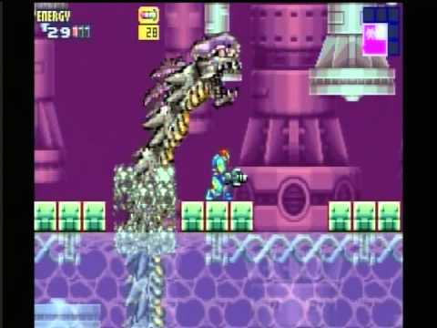

Metroid Fusion was released back in November 17th 2002. It could be considered as the 4th or 5th entry in the Metroid series of games due to it being released simultaneously with Metroid Prime for the GameCube. Though a lot of people will consider it as the 4th entry since it follows the same style as the previous games having to be on a 2-D plane. Not only that, but in the title sequence of the game it shows up as Metroid 4. It was the first game to be released for the Game Boy Advance. Not it is one of my personal favorites because this was the first Metroid game that I had ever played. I spent hours upon hours playing it and it kept me busy. This game holds so much meaning for me that I play it a couple of times in a year always trying to get better either by beating it faster than I did the previous time or trying to beat it with the lease amount of items that I was able to.
